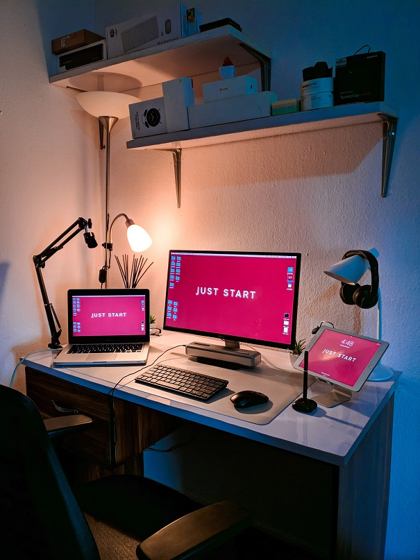

Préparation : Le socle

Les 2 semaines précédant le démarrage de la
formation O'Clock sont consacrées à la découverte
des outils dont nous aurons besoin durant les 6 prochains mois.
Slack, le Cockpit, le téléporteur/la Virtual Machine , Discord, Google Drive, GitHub, Twitter : création de compte, vérification du bon fonctionnement, premières visio et call pour vérifier que tout est OK de notre côté.
En plus de l'appropriation et du paramétrage de nos outils, une
première approche du HTML (langage structurel du
Web) et de GitHub (gestion et archivage du code)
est proposée, afin de démarrer dans les meilleures conditions.
Des petits jeux de résolution d'algoritmes basiques sont aussi
suggérés pour préparer nos neurones 🤯 à la saison 2 sur le JavaScript
(langage de programmation Web).
Des conseils en gestion du temps ⏰,
bien-être 🧘, lectures 📖,
veille technique nous sont aussi distillés tout
au long de ces 2 semaines.
La team O'Clock est très présente (merci Virginie !) pour vérifier que
tout va bien, et que nous sommes techniquement prêts pour démarrer
dans les meilleures conditions 💪.